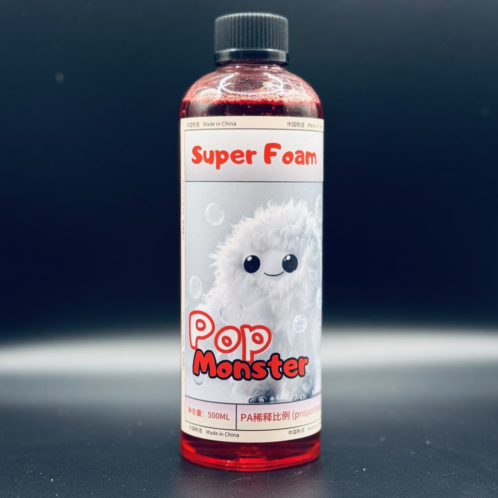

泡沫洗车液
高浓缩泡沫洗车液，一瓶稀释后约 50 公升使用液。给觉得一般洗车精泡沫挂不住的人。
加入购物车 → 填收件资料 → 用 WhatsApp 送出订单；每款能不能寄到你的国家、运费多少，小编会先在 WhatsApp 确认，再请你付款
产品说明
一般洗车精泡沫挂不住、冲两下就化掉，手套一擦就把砂粒拖在漆面上——泡沫洗车液走高浓缩路线，一瓶稀释后可以做到约 50 公升的使用液，泡沫丰富细致，用来把砂粒包覆浮起，减少擦拭时的刮伤风险。
规格
- 特性
- 高浓缩；一瓶稀释后约可做出 50 公升使用液
- 稀释比例
- 请依瓶身标示；或在 WhatsApp 告知你用泡沫机还是手动喷壶，小编再提供对应比例
- 适用范围
- 全材质车身外部清洁
怎么用
- 先用清水或预洗剂把车身表面的砂粒与大颗粒污染冲掉。
- 依瓶身标示稀释后，用泡沫机或喷壶让泡沫均匀覆盖全车。
- 让泡沫停留一段时间软化污垢，再用洗车手套从车顶往下、单方向直线擦拭，不要打圈。
- 从上到下分区冲干净，最后收水。
注意事项
- 不要在烈日曝晒、车身烫手的状态下洗车，泡沫会太快干在漆面上留痕。
- 洗车手套与毛巾要保持干净，砂粒卡在布料里是刮伤的主因。
- 本支的酸碱值与详细规格请依瓶身标示为准，或在 WhatsApp 向小编确认后再施工——不要照别支产品的比例调配。
- 建议配戴手套并保持通风；不慎入眼请以大量清水冲洗并就医。
- 存放于阴凉避光处，避免高温与阳光直晒，放在儿童拿不到的地方，不可吞食。
- 目前没有可对外提供的完整成分表与安全数据表（SDS）；若你的工作环境需要这些文档，请先在 WhatsApp 向小编确认。
常见问题
弱酸性对油脂类污染物去除力更强；中性配方更温和，适合频繁洗车（每周）。本品的酸碱值与适用材质请依瓶身标示，或在 WhatsApp 向小编确认后再施工。
不需要。手动喷壶稀释后直接使用也很好，只是泡沫密度比泡沫机低。手动喷壶直接喷洒于车身后洗车手套擦拭同样有效。
可依污染程度调整：轻度日常洗车用 1:50，中度污染用 1:30，重度污染或轮圈专攻用 1:20。原液不建议直接使用。
施工教学
同类商品


泡沫洗车液
确定要买就加入购物车，用 WhatsApp 送出订单；还不确定适不适合你的车，先在 WhatsApp 问清楚再下单。